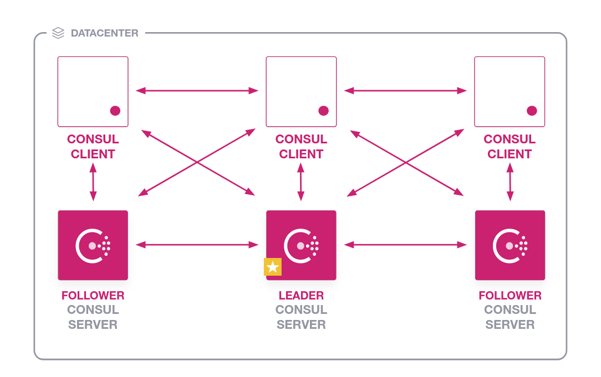
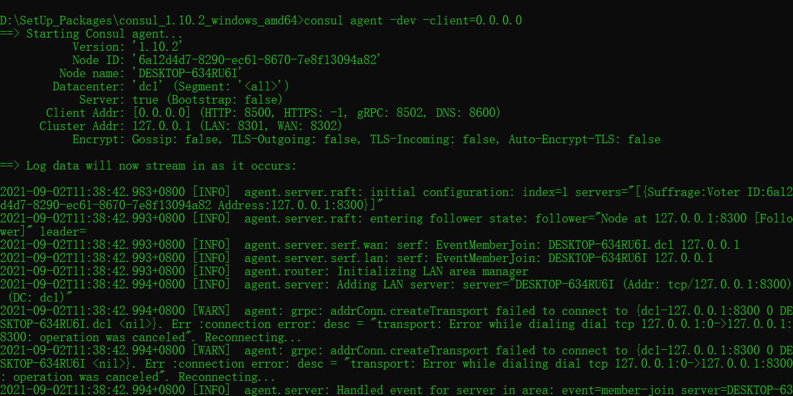
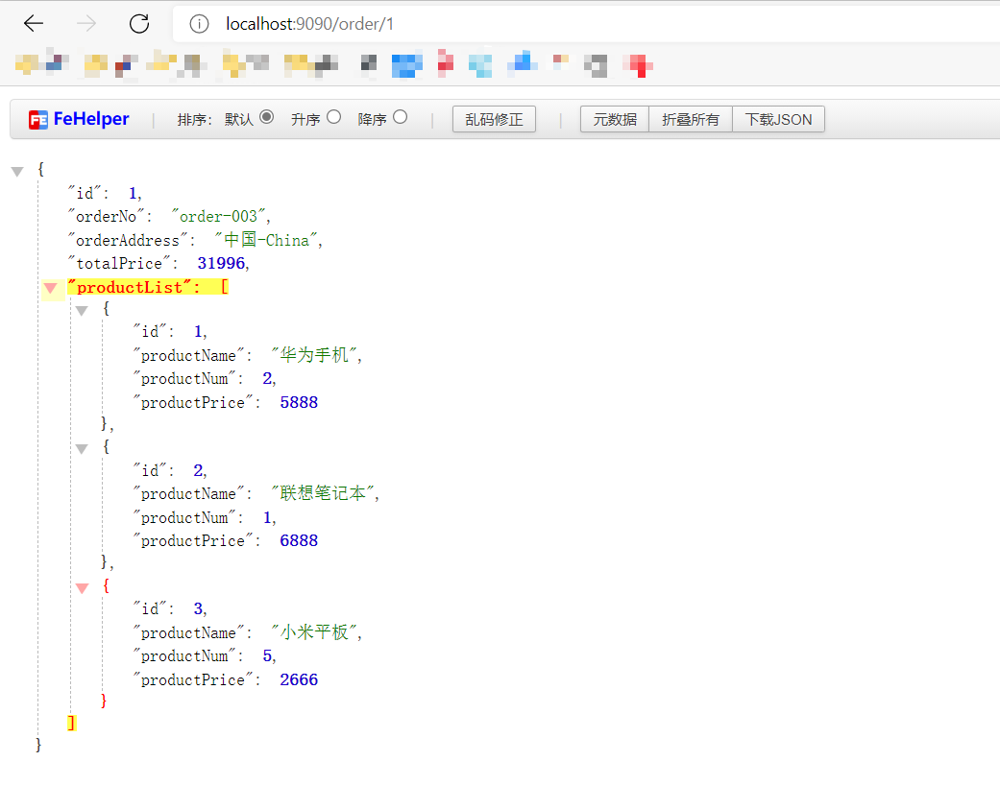

Spring Cloud之Consul 服务注册中心
1.什么是Consul?
Consul 是 HashiCorp 公司推出的开源产品，是一种服务网格(Service Mesh)解决方案。用于实现分布式系统的服务发现、服务隔离、服务配置，这些功能中的每一个都可以根据需要单独使用，也可以同时使用所有功能以构建完整的服务网格(Service Mesh)。Consul 官网目前主要推 Consul 在服务网格(Service Mesh)中的使用。
与其它分布式服务注册与发现的方案相比，Consul 的方案更“一站式”——内置了服务注册与发现框架、分布一致性协议实现、健康检查、Key/Value 存储、多数据中心方案，不再需要依赖其它工具。Consul 本身使用 go 语言开发，具有跨平台、运行高效等特点，也非常方便和 Docker 配合使用。
Service Mesh可参考下面的文章
什么是Service Mesh？
2. Consul的主要特性
Consul 的主要特点是：
- 服务发现：Consul 的客户端可以注册一个服务，例如 api 或 mysql，其他客户端可以使用 Consul 来发现给定服务的提供者。使用 DNS 或 HTTP，应用程序可以轻松找到它们所依赖的服务。
- 健康检查：Consul 客户端可以提供任意数量的健康检查，或者与给定的服务相关联（“网络服务器是否返回 200 OK”），或者与本地节点（“内存利用率是否低于 90%”）相关联。操作员可以使用此信息来监控集群健康状况，并且服务发现组件可以使用它来将流量路由到不健康的主机之外。
- KV 存储：应用程序可以将 Consul 的分层键/值存储用于多种目的，包括动态配置、功能标记、协调、领导选举等。简单的 HTTP API 使其易于使用。
- 安全的服务通信：Consul 可以为服务生成和分发 TLS 证书，以建立相互的 TLS 连接。意图可用于定义允许哪些服务进行通信。可以通过实时更改意图轻松管理服务分段，而不是使用复杂的网络拓扑和静态防火墙规则。
- 多数据中心：Consul 支持开箱即用的多个数据中心。这意味着 Consul 的用户不必担心构建额外的抽象层以扩展到多个区域。
Consul 旨在对 DevOps 社区和应用程序开发人员友好，使其非常适合现代、弹性的基础设施。
3. Consul的基础架构
Consul是一个分布式系统，设计用于在一组节点上运行。节点可以是物理服务器、云实例、虚拟机或容器。连接在一起，运行在上面的节点集称为数据中心。在数据中心中，Consul可以在两种模式下运行: 服务端模式和客户端模式。服务器代理为Consul维护一致的状态。客户端是一个运行在每个服务运行节点上的轻量级进程。一个数据中心将有3-5个服务器和许多客户机。

从大视角分析Consul的架构

首先，图中有两个数据中心，分别为 Datacenter1 和 Datacenter2 。Consul 非常好的支持多个数据中心，每个数据中心内，有客户端和服务器端，服务器一般为 3~5 个，这样可以在稳定和性能上达到平衡，因为更多的机器会使数据同步很慢。不过客户端是没有限制的，可以有成千上万个。
数据中心内的所有节点都会加入到 Gossip (流言)协议。这就意味着有一个 Gossip 池，其中包含这个数据中心所有的节点。客户端不需要去配置服务器地址信息，发现服务工作会自动完成。检测故障节点的工作不是放在服务器端，而是分布式的；这使得失败检测相对于本地化的心跳机制而言，更具可拓展性。在选择 leader 这种重要的事情发生的时候，数据中心被用作消息层来做消息广播。
每个数据中心内的服务器都是单个 Raft 中节点集的一部分。这意味着他们一起工作，选择一个单一的领导者——一个具有额外职责的选定的服务器。leader 负责处理所有查询和事物。事物也必须作为同步协议的一部分复制到节点集中的所有节点。由于这个要求，当非 leader 服务器接收到 RPC 请求时，就会将请求其转发给集群 leader。
服务器端节点同时也作为 WAN Gossip 池的一部分，WAN 池和 LAN 池不同的是，它针对网络高延迟做了优化，而且只包含其他Consul 服务器的节点。这个池的目的是允许数据中心以最少的消耗方式发现对方。启动新的数据中心与加入现有的 WAN Gossip 一样简单。因为这些服务器都在这个池中运行，它还支持跨数据中心请求。当服务器收到对不同数据中心的请求时，它会将其转发到正确数据中心中的随机服务器。那个服务器可能会转发给本地的 leader。
这样会使数据中心的耦合非常低。但是由于故障检测，连接缓存和复用，跨数据中心请求相对快速可靠。
总的来说，数据不会在不同的数据中心之间做复制备份。当收到一个请求处于别的数据中心的资源时，本地的 Consul 服务器会发一个 RPC 请求到远端的 Consul 服务器，然后返回结果。如果远端数据中心处于不可用状态，那么这么资源也会不可用，但这不影响本地的数据中心。在一些特殊的情况下，有限的数据集会被跨数据中心复制备份，比如说 Consul 内置的 ACL 复制能力，或者像 consul-replicate 这样的外部工具。
4. Consul的工作原理

服务发现以及注册
当服务 Producer 启动时，会将自己的 Ip/host 等信息通过发送请求告知 Consul，Consul 接收到 Producer 的注册信息后，每隔 10s（默认）会向 Producer 发送一个健康检查的请求，检验 Producer 是否健康。
健康检查
当 Consumer 请求 Product 时，会先从 Consul 中拿到存储 Product 服务的 IP 和 Port 的临时表(temp table)，从temp table 表中任选一个· Producer 的 IP 和 Port， 然后根据这个 IP 和 Port，发送访问请求；temp table 表只包含通过了健康检查的 Producer 信息，并且每隔 10s（默认）更新。
5. Consul的安装
Eureka 其实就是个 Servlet 程序，跑在 Servlet 容器中；Consul 则是用 go 语言编写的第三方工具需要单独安装使用。
Download Consul
Windows下单节点安装
下载一个Consul的windows安装包
cd到对应的目录下，使用cmd启动Consul。
1 | -dev表示开发模式运行，另外还有 -server 表示服务模式运行 |
Consul在开发模式下启动本地代理，这是一种内存服务器模式，为了方便使用，启用了一些常见特性(尽管存在安全风险) ，并且关闭了所有持久性选项。这种模式不安全也不可伸缩，但是不需要额外的配置就可以轻松地实验大多数领事的功能。
为了方便启动，也可以在 consul.exe 同级目录下创建一个脚本来启动，脚本内容如下：
1 | consul agent -dev -client=0.0.0.0 |
执行脚本之后看到如下信息：

访问管理后台：http://localhost:8500/ 看到下图意味着我们的 Consul 服务启动成功了。
6. Consul入门案例
服务发现
基础环境
注册中心
consule.exe（从Consul官网下载）
服务提供者spring-cloud-demo-service-provider
服务消费者spring-cloud-demo-service-consumer
服务接入注册中心
添加依赖
1 | <!-- spring cloud consul 依赖 --> |
配置文件
1 | spring: |
访问测试
访问http://localhost:9090/order/1结果如下：
